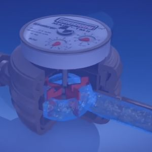
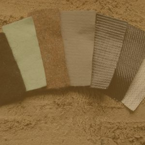

Tuberías
PVC y polietileno para acueducto, alcantarillado, presión y conducción.
Ver TubosistemasOfrecemos soluciones llenas de innovación y calidad, con líneas completas para los segmentos de construcción, industria, infraestructura y riego, de excelente durabilidad.

Tuberías, medidores, geotextiles y grifería con la tranquilidad de materiales certificados.
PVC y polietileno para acueducto, alcantarillado, presión y conducción.
Ver Tubosistemas
Micromedidores y macromedidores para control preciso del consumo de agua.
Ver Línea agua
Geotextiles tejidos y no tejidos de polipropileno, geomembranas, geotubes, drenaje y control de erosión.
Ver GeosistemasAbre la llave de nuevas y mejores posibilidades: grifería institucional, temporizada y residencial.
Consultar disponibilidadTuberías y accesorios en PVC para edificaciones, redes de infraestructura y sistemas de riego.
Tuberías y accesorios para conducción de agua a presión en redes de suministro de agua en edificaciones.
CotizarTuberías y accesorios para conducción de aguas residuales y aguas lluvias en redes de desagüe en edificaciones.
CotizarTuberías y accesorios para la conducción de cableado eléctrico y telefónico en edificaciones.
CotizarTuberías para la ventilación de redes sanitarias en edificaciones.
CotizarTuberías y accesorios para la conducción de agua caliente en edificaciones.
CotizarCemento solvente y limpiador para la unión efectiva de tuberías y accesorios de PVC y CPVC.
CotizarTuberías para la conducción de agua cruda o tratada en líneas de aducción, conducción y distribución.
Tuberías de doble pared para la captación y evacuación de aguas residuales y aguas lluvias en redes de alcantarillado.
Tuberías para alojar y proteger conductores subterráneos eléctricos y telefónicos.
Tuberías de unión mecánica para transporte de agua a presión, en riego predial y en distritos de riego. Cuentan con sello elastomérico tipo Rieber, que da mayor hermeticidad y evita el desplazamiento en la campana durante el ensamble.
Tuberías de doble extrusión, con pared interior lisa y exterior corrugada, y acople mecánico con doble hidrosello. Una alternativa eficiente para conducir grandes volúmenes de agua a presiones bajas (menores de 60 psi).
CotizarTubería con tecnología PVC-O (policloruro de vinilo orientado) para el transporte de agua a presión, usada en tuberías principales de distritos de riego y en sistemas de acueducto.
Tuberías portátiles fabricadas bajo la norma S-430-HH del Departamento de Agricultura de los Estados Unidos. Entregan el agua por compuertas directamente sobre los surcos del terreno (riego superficial), cubriendo la mayor área con la menor cantidad de tubos.
CotizarTuberías y accesorios resistentes a la presión para el montaje de unidades de bombeo, filtración, fertilización, cabezales de válvulas y módulos de riego. Su rigidez y resistencia al impacto prolongan la vida útil del sistema.
CotizarTuberías portátiles de extremo liso, con protección UV y resistencia al impacto, para cubrir la mayor área posible con tuberías móviles. Útiles donde no es posible instalar sistemas fijos, como terrenos en arriendo o cultivos que no permiten enterrar tubería.
CotizarAcoples macho y hembra para acoplar y desacoplar fácilmente la tubería Supramóvil, compatibles con los accesorios de la línea Presión Extremo Liso (tees, adaptadores, codos de 90° y 45°, tapones).
CotizarTuberías económicas para conducir agua de riego a presiones bajas (no mayores de 80 psi), en sistemas de riego localizado de alta frecuencia: goteo, micro aspersión y aspersión a baja presión.
CotizarGeotextiles, drenaje, impermeabilización y protección de suelos para vías, obras hidráulicas y taludes.
Geotextil fabricado al entrelazar, generalmente en ángulo recto, dos o más conjuntos de hilos, fibras o cintas. Alta resistencia a la tracción con baja deformación y reducida tendencia a la fluencia.
Fabricados con fibras de grapa para drenaje de subsuperficies y separación de suelos. Combinan alta durabilidad con excelentes propiedades hidráulicas y físicas.
Geotextil de TenCate que reúne en un solo producto las funciones que necesita una estructura vial: refuerzo, separación, confinamiento y filtración. Permite reducir el espesor de las capas de diseño, con menor mantenimiento y mayor vida útil.
CotizarGeotextil tejido de TenCate para estabilizar suelos blandos y reforzar suelos con asentamiento diferencial, en vías, aeropuertos y ferrocarriles.
Tubo de drenaje flexible en polietileno de alta densidad (PEAD) con corrugación helicoidal, para recolectar el agua que se infiltra en el suelo. Ayuda a remover el exceso de agua en terrenos cultivables.
Tubos corrugados de resina de PVC, resistentes a agentes corrosivos y químicos, fabricados por Gerfor bajo la especificación interna de producto EP0580095. Se usan para remover el exceso de agua del suelo en terrenos cultivables.
CotizarGeocompuesto liviano y flexible con núcleo de geomanta tridimensional de polipropileno, termosoldado entre dos geotextiles no tejidos de poliéster. Conduce líquidos y gases a través de su plano para evacuar el agua y el aire del suelo.
Geomembranas de polietileno de alta densidad (HDPE) para condiciones expuestas, termofusionables y fabricadas con resinas vírgenes. Se usan como elemento de estanqueidad en contención de líquidos, pilas de lixiviación, canales, embalses y reservorios.
Contenedores Geotube® de estructura textil fuerte y flexible: un método probado y económico para protección de litorales y estructuras marinas.
Mantos temporales o permanentes que protegen el suelo expuesto al agua, el viento y la gravedad, y permiten el establecimiento de vegetación. Se usan sobre todo en taludes y en el revestimiento de canales y orillas.
Medidores de agua volumétricos y de velocidad, en bronce y composite, y sus accesorios.
Solicite la ficha técnica con el asesor.
CotizarSolicite la ficha técnica con el asesor.
CotizarSolicite la ficha técnica con el asesor.
CotizarSolicite la ficha técnica con el asesor.
CotizarSolicite la ficha técnica con el asesor.
CotizarNo encontramos productos con esa búsqueda. Pregúntenos y lo conseguimos.


